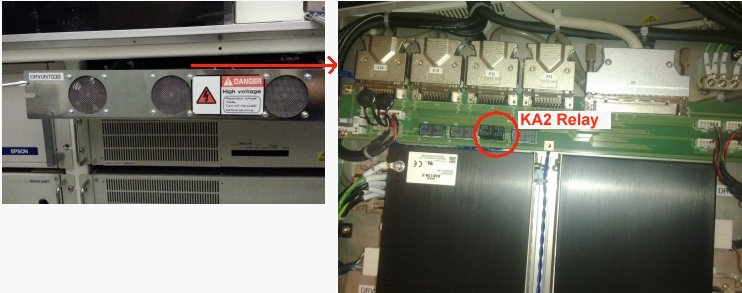
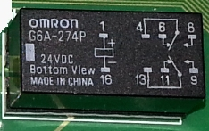
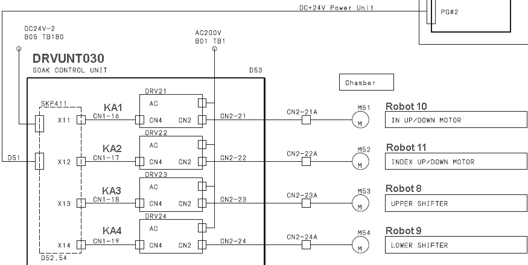

Service History
Subject: TR-60 after press HOME, handler show running but never complete
Handler Model: TR-60
Controller: RC520
Date: 9 Sep 2010
Symptom
After press HOME, handler show running but never complete.
Action
-Found Robot 11 (Chamber Soak Buffer Up/Down) cannot MCAL in SPEL CT
-PG #2(For Robot 8, 9, 10 & 11)
-Found inside DRVUNIT030(Soak Control Unit), DRV22, KA2 Relay never sit properly in IC socket, resit KA2 Relay, able to HOME Robot 11 and dry run TR60


Relay
Cause
DRVUNIT030(Soak Control Unit), DRV22, KA2 Relay never sit properly in IC socket caused Robot 11 unable to Home.
Remarks
If error 4302 The Pulse Generating Board detected
an alarm signal, 4014 MCAL is not completed or 4046 , check sensor & slit plate.
PG #1(Hand A and B up/down for Input & Output Hands)
PG #2(For Soak Robot 8, 9, 10 & 11)
KA1 : For robot 10 (Input-side Soak Buffer; moving top-middle-bottom)
KA2 : For Robot 11 (Chamber Soak Buffer Up/Down)
KA3 : For Robot 8 (Upper Soak Boat Transportation; top->moving from test to in buffer)
KA4 : For Robot 9 (Lower Soak Boat Transportation; bottom->moving from in buffer to bottom test)
